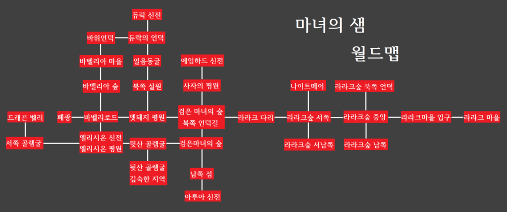
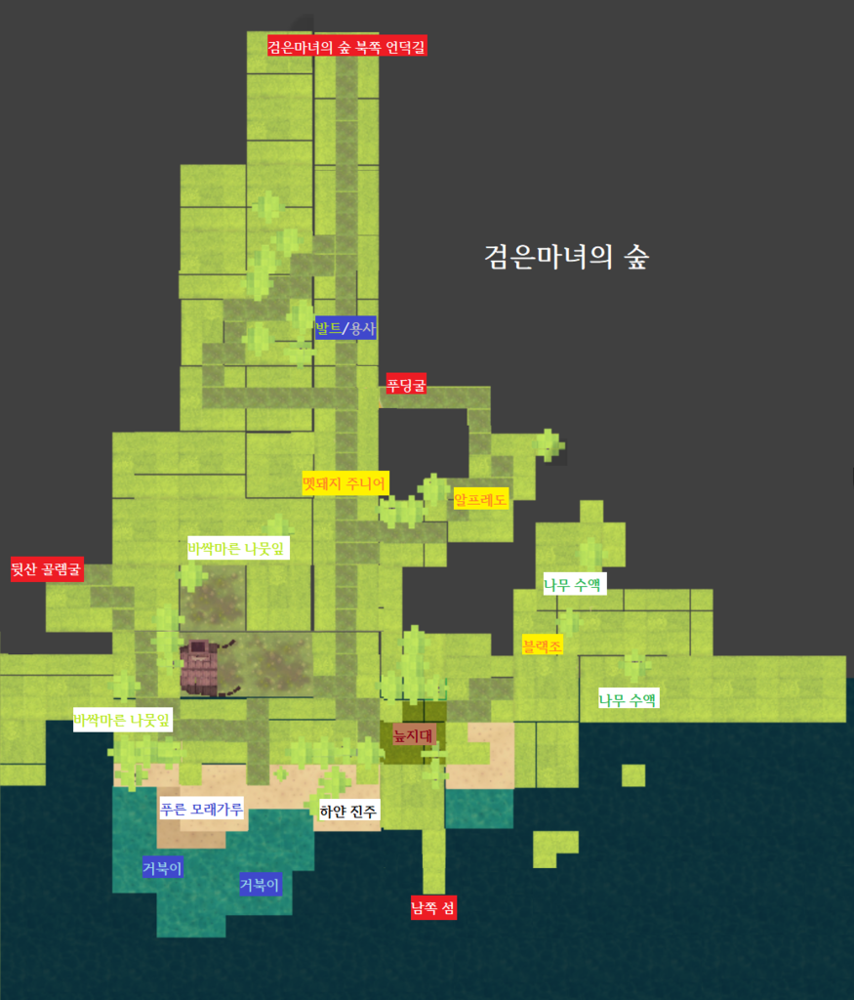
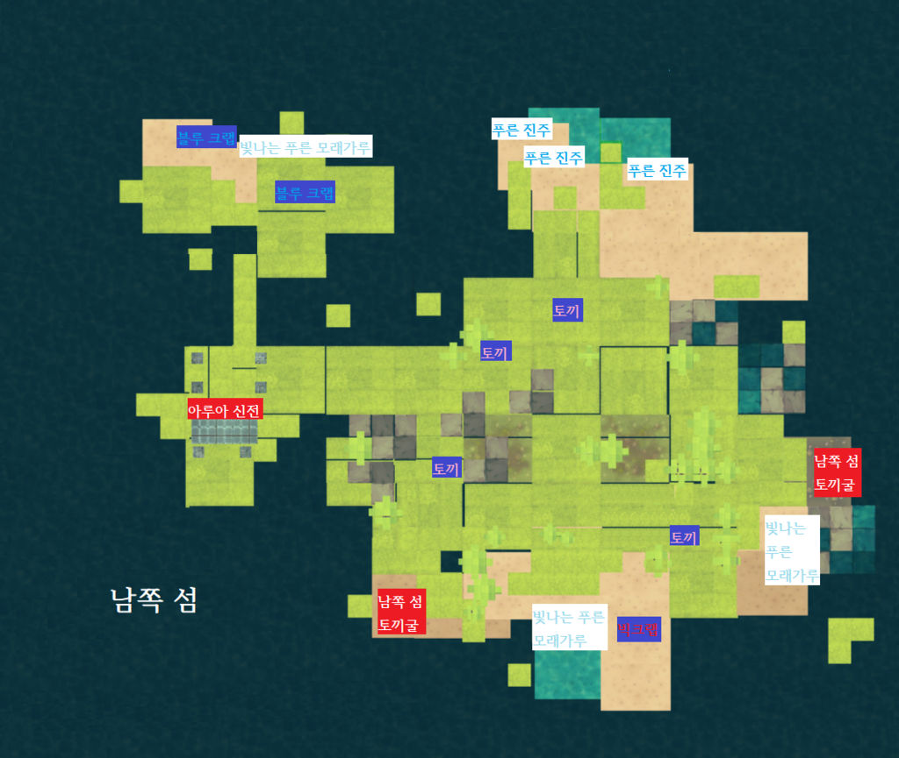
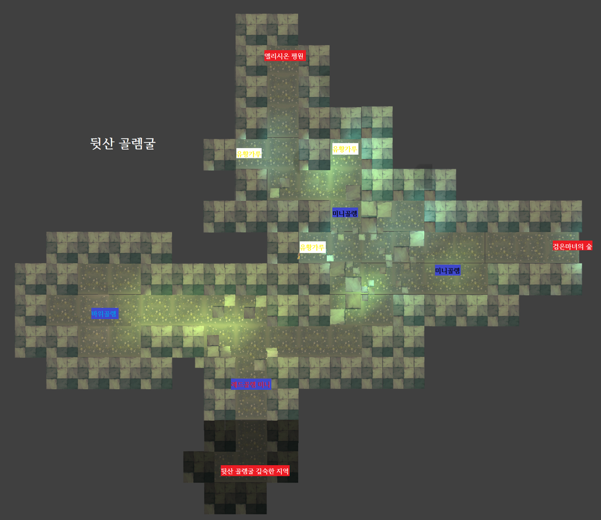
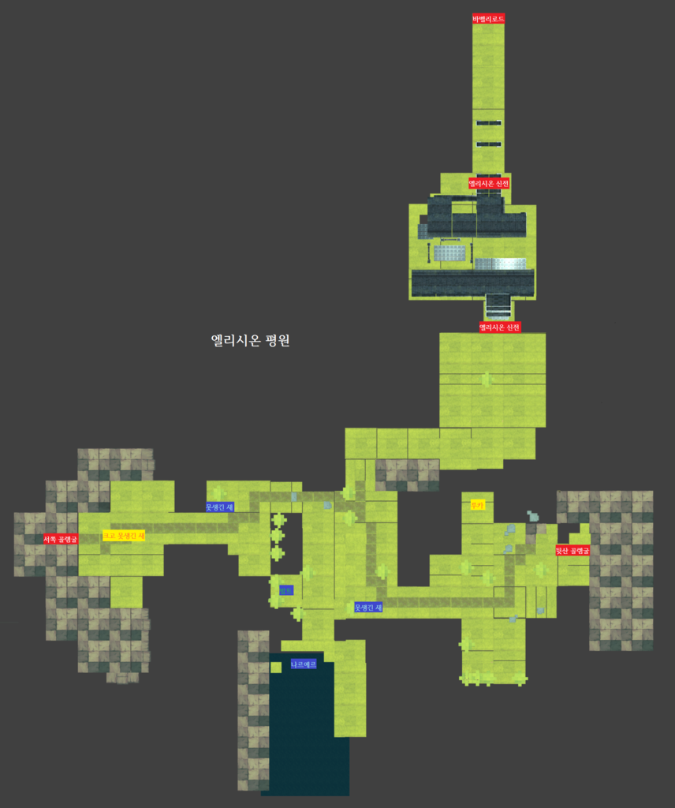

장르 : 육성&턴제 RPG
제작자 : Kiwiwalks
출시 : 2015년 7월 13일
플랫폼 : 안드로이드, IOS
후속작 : 마녀의 샘2, 마녀의 샘3, 마녀의 샘4
인간 용사들을 피해 숲 속에 숨어 사는 마녀 파이베리의 모험과 성장기
파이베리
Pieberry. 모험의 주인공. 성별은 여성. '파이베리'라는 이름은 파이와 딸기를 좋아해서 스스로 본인에게 지어준 이름이다. 아주 어릴 때부터 바벨리아 대륙 검은 마녀의 숲에서 혼자 자랐고, 마녀를 사냥하는 용사로부터 살아남기 위해 수련과 모험을 한다. 바벨리아 대륙 5대 신전장 중 하나인 엘리시온의 친딸이기에 후속작 마녀의 샘2의 주인공 루나와는 다르게 순혈신족이다. 본래 이름은 루시아(Lucia). 후속작인 마녀의 샘2, 마녀의 샘3에도 등장한다. 마녀의 샘4에도 출연할 예정.
블랙조
Black Joe. 파이베리의 두 번째 애완동물이자 시종 역할을 하는 새. 성별은 남성. 원래는 파이베리의 친어머니 엘리시온의 시종이자 수호동물이였으나 엘리시온에 의해 못생긴 새가 되는 마법에 걸려버렸다. 본명은 아크(Ark)이며 본래는 누크라는 종족이다. 항상 파이베리의 곁에 머물며 소환마법으로 데려올 수 있기에 파이베리가 주인공인 본작 마녀의 샘은 물론 파이베리가 주인공이 아닌 마녀의 샘2, 마녀의 샘3에도 파이베리와 함께 출연한다.
알프레도
파이베리를 따라다니는 인간 용사. 성별은 남성. 혼자 마녀를 사냥해 명성을 얻기 위해 자신이 발견한 마녀를 아무에게도 알리지 않는다. 아무리 시도해도 파이베리를 잡을 수 없자 자신의 무능력함을 비관해 자살하려는 것을 파이베리가 구해준 후 감화되어 직업을 농부로 전향한다. 마녀의 샘2에도 등장한다.
크라운
황금 갑옷으로 전신을 감싼 바벨리아 왕궁 최고용사. 사실은 인간이 아닌 혼혈 신족이다. 마녀의 샘 시리즈의 대표적인 빌런이자 악역. 때문에 후속작에서도 직접 등장하거나 이름이 언급된다. 본명은 쥬드. 성별은 남성. 800년동안 아라무트를 섬기는 수호동물이였으나 혼혈 신족은 순혈 신족의 하인으로 살아야 했던 현실에 대한 비관과 힘에 대한 욕망으로 인간과 모의해 전쟁을 일으키고 신전장인 순혈신족들은 살해했다. 파이베리가 모든 샘의 봉인을 해금하고 교황을 처지하는 데 성공한 후 본래 모습인 드래곤으로 변해 인간들의 마을인 바벨리아 마을로 날아가 마을을 파괴하려 하지만, 부활한 5명의 순혈신족에 의해 저지당하고 자신이 모시던 신전장 아라무트에 의해 소멸된다. 마녀의 샘2에서는 같은 혼혈신족이자 루나의 친어머니 루디나에게 '당신 없이는 숨도 쉴 수 없다'는 말로 구애하다 거절당한 과거가 밝혀지고, 마녀의 샘3에서는 그의 딸 모네트(Monnet)가 등장한다.
저스티스
Justice. 중대장 직급의 왕궁용사. 본작 마녀의 샘과 마녀의 샘2에서는 플레이어의 선택에 따라 파이베리의 애인이 될 수도, 그렇지 않을 수도 있다. 그러나 마녀의 샘3에서는 이미 파이베리와 연인 관계인 것으로 등장. 마녀의 샘 시리즈의 등장인물들 중 유일하게 외모에 관한 언급이 있으며 훤칠하고 잘생겼다고 묘사된다. 마녀의 샘4에도 출연할 예정.
랄프
검은마녀의 숲 북쪽 언덕길에서 만날 수 있는 까칠한 상인. 48시간동안 머무른 뒤 떠나는데, 돌아오는데 72시간이 걸린다. 구하기 힘든 아이템을 의뢰하고 보수를 준다. 의뢰품을 받으면 마을로 돌아가 버리므로 필요한 물건을 구매한 후 의뢰품을 전달하자.
파는 물건
| 이름 | 가방 확장도구 | 일반텐트 | 마법텐트 | 크레이츠 뿌리 | 크레이츠 수액 | 크레이츠 나뭇잎 | 진저브레드 | 로얄젤리 |
|---|---|---|---|---|---|---|---|---|
| 설명 | - | 일반적인 천 텐트 | 마법의 숙면 텐트 | 켄츠산 희귀한 나무의 뿌리 | 켄츠산 희귀한 나무에서 추출한 수액 | 켄츠산 희귀한 나무의 잎 | 엄청난 체력 회복 쿠키 | 엄청난 마나 회복 젤리 |
| 효과 | 가방 저장공간 하나 추가 | 캠핑 후 체력&마나 최대치의 절반 회복 일기장 기록가능 | 캠핑 후 체력&마나 모두 회복 피로회복 일기장 기록가능 | 먹으면 최대체력 12 상승 | 먹으면 최대마나 12 상승 | 먹으면 최대마력 6 상승 | 체력회복 250 | 마나회복 300 |
| 가격 | 100 | 400 | 500 | 1200 | 1200 | 1200 | 300 | 300 |
랄프의 의뢰
| 의뢰 | 킹푸딩 | 마법석판 | 빅크랩 등껍질 | 라바스톤 | 블랙라이언의 이빨 | 검은 마력의돌 | 얼음심장 | 라바스테인 스톤 | 지르코니아 드래곤의 알 | 라이트닝 뿔 |
|---|---|---|---|---|---|---|---|---|---|---|
| 장소 | 푸딩굴 | 뒷산 골렘굴 | 남쪽 섬 | 뒷산 골렘굴 깊숙한 지역 | 사자들의 평원 | 서쪽 골렘굴 | 북쪽설원 얼음동굴 | 뒷산 골렘굴 깊숙한 지역 | 드래곤 벨리 | 드래곤 벨리 |
| 보상 | 700 | 900 | 1150 | 4000 | 3000 | 5000 | 4000 | 7000 | 10000 | 15000 |
아루아
아루아 신전의 주인. 날씨를 관장한다. 수호동물은 아슬란.
에임하드
에임하드 신전의 주인. 위험지역을 봉인하고 마나를 보내며 결계를 관장한다. 듀락과 친해지고 싶어 하는데 매번 투닥이고 끝난다. 수호동물은 라이팅벨.
엘리시온
엘리시온 신전의 주인. 생명을 관장한다. 인간에게 봉인당하기 전 자신의 수호동물 아크를 딸 파이베리에게 보내 인간으로부터 보호하게 했다.
듀락
듀락 신전의 주인. 산사태나 지진이 났을 때 바빠진다고 하고, 염력을 관장한다. 수호동물은 테미르.
아라무트
교황이 다루던 아라무트 신전의 원래 주인. 파괴된 것들을 다시 복구하기도 하고, 모든 종류의 기적을 관장한다. 수호동물은 쥬드.
판다 쿰
북쪽 설원 왼쪽 끝에 살고있는 판다. 하루에 한 번 같이 수련을 할 수 있다. 파이베리가 물리공격을 하면 물리공격력이, 마법공격력을 하면 마법공격력이 1만큼 상승하고 공격을 당할 때는 방어력이 0.5씩 오른다.
루나
북쪽 설원에 살고 있는 마녀. 첫 만남 이벤트를 보고 텐트로 찾아가면 루나의 마법도감을 얻을 수 있다. 두 번째로 찾아갈 때 딸기를 가져다 주면 마력빙결체를 선물로 준다. 세 번째로 찾아가면 얼음늑대를 탄 루나와 달리기 시합을 할 수 있다. 이기면 마력빙결체를 주는데, 매우 빠르기 때문에 루카를 타야 이길 수 있다. 네번째로 찾아가면 텐트에 없는데, 교황성 지하에 같혀 있는 것이다. 원래는 마을에 살고 있었으나 신족과 인간의 전쟁이 발발했던 10살때 쫒겨나 설원에 살게 되었다고 한다. 그 후 미셸이라는 마녀와 함께 살고 있었으나 왕궁용사에게 붙잡힌 미셸에 의해 집 위치를 발각당한 이후로는 혼자 살게 되었다. 파이베리보다 나이가 10살정도 많다. 후속작 마녀의 샘2의 주인공.
미셸
루나와 함께 살던 마녀. 교황청 지하감옥에 같혀 실험을 당하고 있다. 샘의 마력을 완전히 컨트롤하는 연구에 쓰이고 있다. 혼혈 신족이다. 엔딩 이후 파이베리가 신전장이 되면 신관 자리에 자신을 꽃아달라고 청탁한다. 생활력이 강해 보인다.
마력 : 공격마법의 피해량에 영향을 준다.
마나 : 마법을 사용하면 일정량씩 소모된다. 일부 수련활동에 필요하다. (수련활동이 요구하는 마나보다 잔여 마나량이 적을 때, 파이베리가 쉬고 싶다는 멘트를 한다. 아이템을 먹거나 잠을 자면 회복된다.)
체력 : 마녀의 활동 가능량을 의미한다. 체력이 없으면 수련활동이나 전투가 제한된다. 아이템을 먹거나 잠을 자면 회복된다.
힘 : 마법사용을 제외한 기본공격력을 나타낸다. 전투시 칼 아이콘을 클릭하면 볼 수 있는 지팡이의 물리공격력.
방어 : 전투 중 피해 감소량을 나타낸다. 방어가 높을수록 공격받을 때 피해를 적게 입는다.
민첩 : 마녀의 행동력을 의미한다. 높을수록 전투중 공격차례가 더 빨리 돌아온다. (ex: 민첩이 높을 시 적이 한번 공격할때 파이베리는 최고 네번까지 공격할수 있다) 마법/물리공격의 성공확률에도 영향을 준다. 이것이 낮으면 루카같이 민첩이 높은 애완동물을 잡기 힘들다.
피로 : 피로가 0에 가까울수록 전투시 기본 전투능력이 최대 20% 상승한다. 반대로 피로가 높으면 추가 상승 능력치가 낮아지고 특정 이벤트 성공 확률을 감소시킨다. 잠을 자지 않고 계속 활동할 때 누적되고 잠을 자면 감소한다.
명성 : 파이베리에 대한 인간의 인지도. 인간에게 호의를 보일수록 명성이 올라가고 특정 엔딩의 분기점이 된다.
힘보다는 마력, 방어력보다는 민첩에 투자하는 유저가 많다. 이유인즉 다른 게임에 비해 민첩이 적의 공격미스로 이어지는 확률이 크고, 엘리시온의 로브가 1회 부활을 지원해 유사시 보험이 가능하기 때문. 이 루트를 타려면 나무치기와 마법연습 수련이 초반 효율에 좋고, 마력과 민첩을 올려주는 아이템을 구매하거나 제작해 먹는 것이 중~후반 효율에 좋다. 민첩을 충분히 올리기 전까진 적의 딜을 견뎌야 하므로 체력과 방어력에도 최소한의 투자는 해야한다. 힘을 올려 평타로 승부보고 싶다면 용봉탕과 사자탕(블랙라이언 이빨 필요) 제작에 투자하는 것도 방법. 특정한 보스에게 막혔을 경우 끈끈이 폭탄을 사용하면 보다 수월하게 통과할 수 있다. 끈끈이 폭탄은 플레이 전반에 유용하게 쓰인다.
아루아의 지팡이 : 아루아가 쓰던 마력지팡이. 착용하면 공격마법 사용시 특정 확률로 크리티컬(총 피해량의 200%) 효과가 일어난다. 아루아의 신전에서 획득 가능.
에임하드의 신발 : 에임하드가 사용하던 마력이 부여된 신발. 신으면 일정 확률로 적의 공격을 완벽하게 회피시켜주는 기적이 일어난다. 에임하드의 신전에서 획득 가능.
엘리시온의 로브 : 엘리시온의 마력이 부여된 로브. 전투 중 위급 상황에서 한 번 체력의 절반을 회복시켜준다. 엘리시온의 신전에서 획득 가능.
듀락의 장갑 : 듀락이 사용하던 장갑. 물리 공격시 특정 확률로 기본 공격력의 300% 크리티컬 효과 발동. 듀락의 신전에서 획득 가능.
아라무트의 모자 : 아라무트의 마력이 깃든 모자. 아루아의 지팡이와 함께 착용하면 마법 크리티컬 효과가 훨씬 상승한다. 교황성 지하감옥에서 획득 가능.
마법도감 입문
| 이름 | 3구 화염 중심문양 | 증폭 중부문양(하) | 정신력 집중 외부문양(하) | 딸기맛 체력포션 | 포도맛 마나포션 | 끈끈이폭탄 |
|---|---|---|---|---|---|---|
| 조합법 | 마법석판x1 유황가루x1 푸른 모래가루x1 바싹마른 나뭇잎x2 | 마법석판x1 유황가루x3 하얀진주x3 검은돌x2 | 마법석판x1 하얀진주x4 푸른 모래가루x2 | 딸기맛 푸딩x1 나무 수액x1 | 포도맛 푸딩x1 나무 수액x1 | 끈적한 검은푸딩x2 |
| 설명 | 수직 화염마법 | - | - | 딸기맛 체력회복 주스 | 포도맛 마나회복 주스 | - |
| 효과 | 기본데미지 25 + 마력의 110% 추가피해 | 마법효과 10% 증폭 | 소모마나 10% 감소 | 체력회복 30 | 마나회복 30 | 7턴간 적 행동둔화 |
마법도감 초급
| 이름 | 4구 화염석기둥 문양 | 증폭 중부문양(중) | 정신력 집중 외부문양(중) | 영양탕 | 용봉탕 | 빠름빠름 깃털 | 푸르딩 | 슈퍼딸기 |
|---|---|---|---|---|---|---|---|---|
| 조합법 | 마법석판x1 유황가루x3 바싹마른 나뭇잎x4 붉은 돌x1 | 마법석판x1 유황가루x3 푸른진주x3 블루크랩의 등껍질x1 | 마법석판x1 푸른진주x1 푸른 모래가루x2 블루크랩의 등껍질x3 | 토끼간x2 토끼고기x1 토끼똥x3 나무수액x1 | 토끼간x2 거북이 등껍질x2 바위틈 샘물x1 | 크고 못생긴 새의 깃털x1 못생긴 새의 깃털x2 | 킹푸딩x1 퀸푸딩x1 | 빨간딸기x3 |
| 설명 | 암석을 끌어올리는 화염마법 | - | - | 토끼간으로 만든 보양탕 | 먹으면 힘이 솟는 탕약 | - | 마법 푸딩요리 | 딸기 3개의 맛을 하나로! |
| 효과 | 마력의 130% 추가피해 | 마법효과 20% 증폭 | 소모마나 20% 감소 | 먹으면 최대 체력 12 상승 | 힘 8 상승 | 사용하면 민첩이 3만큼 상승한다.(영구효과) | 체력회복80, 마나회복 80 | 체력회복 80 |
마법도감 중급
| 이름 | 5구 지점폭발 문양 | 중폭 중부문양(상) | 정신력 집중 외부문양(상) | 크라레이츠 뿌리 | 크라레이츠 수액 | 크라레이츠 잎 | 멧돼지고기요리 |
|---|---|---|---|---|---|---|---|
| 조합법 | 마법석판x2 진한 유황가루x3 붉은 돌x2 검은 마력의돌x1 | 마법석판x1 진한 유황가루x3 검은돌x2 검은 마력의돌x1 | 마법석판x1 붉은진주x2 빛나는 푸른 모래가루x2 블루크랩의 푸른 등껍질x2 | 크레이츠 뿌리x1 영양탕x1 나무 수액x1 | 크레이츠 수액x1 영양탕x1 나무 수액x1 | 크레이츠 나뭇잎x1 영양탕x1 나무 수액x1 | 멧돼지 고기x2 나무 수액x1 |
| 설명 | 연쇄폭발 화염마법 | - | - | 효과가 극대화된 크레이츠 뿌리 | 효과가 극대화된 크레이츠 나무수액 | 업그레이드된 크레이츠 나뭇잎 | 멧돼지의 힘과 지구력이 담긴 요리 |
| 효과 | 기본피해 90 + 마력의 150% 추가피해 | 마법효과 30% 증폭 | 소모마나 30% 감소 | 먹으면 최대체력 35 상승 | 먹으면 최대마나 35상승 | 먹으면 최대마력 15 상승 | 먹으면 체력회복 125 |
마법도감 상급
| 이름 | 6구 운석소환 문양 | 증폭 중부문양(최상) | 정신력 집중 외부문양(최상) | 나르에르 마력탕 | 나르에르 체력탕 | 나르에르 마나탕 |
|---|---|---|---|---|---|---|
| 조합법 | 상급 마법석판x1 붉은 돌x3 라바스톤x1 검은 마력의돌x2 | 마법석판x1 진한 유황가루x1 검은 마력의돌x5 | 상급 마법석판x1 붉은진주x2 빛나는 푸른 모래가루x2 블루크랩의 등껍질x4 | 용봉탕x1 나르에르의 비늘x1 | 용봉탕x1 나르에르의 살점x1 | 용봉탕x1 나르에르의 혀x1 |
| 설명 | 운석을 소환하는 화염마법 | - | - | 나르에르의 미늘탕 | 나르에르의 살코기탕 | 나르에르의 혓바닥탕 |
| 효과 | 기본피해 185 + 마력의 170% 추가피해 | 마법효과 50% 증폭 | 소모마나 50% 감소 | 최대마력 24 상승 | 최대체력 53상승 | 최대마나 53상승 |
루나의 마법도감
| 이름 | 3주 빙결 중심문양 | 마력빙결체 |
|---|---|---|
| 조합법 | 마법석판x1 얼음발톱x3 영롱한 얼음x2 | 얼음심장x1 영롱한 얼음x3 얼음발톱x3 |
| 설명 | 얼음기둥이 3개 솟아오르는 마법 | 마력을 담은 얼음조각 |
| 효과 | 기본데미지 40 + 마력의 130% 추가피해 | 사용하면 방어가 9만큼 오른다(영구효과) |
마법도감 최상급
| 이름 | 7구 운석압축 폭발 문양 | 사자탕 | 엄청 빠름빠름 깃털 |
|---|---|---|---|
| 조합법 | 상급 마법석판x3 라바스테인스톤x2 검은 마력의돌x3 | 블랙라이언의 이빨x1 용봉탕x1 | 빠름빠름 깃털x2 |
| 설명 | 7운석이 대폭발하는 최고마법 | 사자의 힘이 솟는 탕 | - |
| 효과 | 기본피해 380 + 마력의 200% 추가피해 | 힘 56 상승 | 사용하면 민첩이 10만큼 상승(영구효과) |
낡은 마법도감 (엔딩 이후 계속하기를 누르면 아라무트의 신전 오른쪽 위에 잠겨있던 문이 열리는데 그곳 보물상자를 열면 나온다)
| 이름 | 썬더스톰 | 지르코니아 주니어 | 맑은 정령석 |
|---|---|---|---|
| 조합법 | 상급 마법석판x1 라이트닝의 뿔x1 | 지르코니아의 알x1 지르코니아석x1 | 붉은색 정령구슬x1 녹색 정령구슬x1 푸른색 정령구슬x1 |
| 설명 | 강력한 낙뢰를 떨구는 전격마법 | 지르코니아의 새끼 | 정령구슬을 합한 신비한 돌 |
| 효과 | 기본 데미지 460 + 마력의 300% 추가피해 | 탑승시 공격력 85, 방어력 30 상승 전투 시 사용하면 마나 30소모 후 적에게 마력과 공격력 비례한 피해를 입힘 | 사용시 모든 능력치 20% 상승 전투시 정령의 기운이 공격을 도와준다 |
몬스터나 아이템이 등장하는 자세한 위치는 하단목차의 지도 참조.
| 아이템 | 바싹마른 나뭇잎 | 푸른 모래가루 | 하얀 진주 | 나무 수액 | 거북이 등껍질 | 녹색 정령구슬 | 딸기맛 푸딩 | 민트맛 푸딩 | 포도맛 푸딩 | 검은 푸딩 | 퀸푸딩 | 킹푸딩 | 무지개 푸르딩 | 빛나는 푸른 모래가루 | 푸른 진주 | 블루크랩의 등껍질 | 빅크랩의 등껍질 | 토끼고기 | 토끼똥 | 토끼간 | 홍당무 |
|---|---|---|---|---|---|---|---|---|---|---|---|---|---|---|---|---|---|---|---|---|---|
| 몬스터 | - | - | - | - | 거북이 | 발트 | 딸기 푸딩 | 민트 푸딩 | 포도 푸딩 | 끈적한 검은푸딩 | 퀸푸딩 | 킹푸딩 | 무지개 푸딩 | - | - | 블루크랩 | 빅크랩 | 토끼 | 토끼 | 동굴토끼 | 동굴토끼 |
| 효과 | - | - | - | 마나회복 10 | - | 체력상승 50 | 체력회복 10 | 체력회복 30 | 마나회복 10 | - | 마나회복 50 | 체력회복 60 | 마나와 체력 60씩 회복 | - | - | - | - | 체력 회복 20 | - | 체력회복 40 | 마나회복 15 |
| 장소 | 검은마녀의 숲 | 검은마녀의 숲 | 검은마녀의 숲 | 검은마녀의 숲 | 검은마녀의 숲 | 엘리시온 평원 | 푸딩굴 | 푸딩굴 | 푸딩굴 | 푸딩굴 | 푸딩굴 | 푸딩굴 | 푸딩굴 | 남쪽 섬 | 남쪽 섬 | 남쪽 섬 | 남쪽 섬 | 남쪽 섬 | 남쪽 섬 | 남쪽 섬 토끼굴 | 남쪽 섬 토끼굴 |
| 특이점 | - | - | - | 영양탕, 크라레이츠 아이템 재료 | 용봉탕 재료 | 맑은 정령석 재료 한번밖에 얻지 못한다 | - | - | - | 끈끈이폭탄 재료 | 푸르딩 재료 | 푸르딩 재료, 랄프의 의뢰1 | 엘리시온을 만난 후부터 푸딩굴에 등장 | - | - | - | 랄프의 의뢰3 | 영양탕, 크라레이츠 아이템 재료 | 영양탕, 크라레이츠 아이템 재료 | 영양탕, 용봉탕, 크라레이츠 아이템 재료 | - |
| 아이템 | 유황가루 | 검은돌 | 붉은 돌 | 마법석판 | 진한 유황가루 | 라바스톤 | 라바스테인스톤 | 붉은색 정령구슬 | 못생긴 새의 깃털 | 크고 못생긴 새의 깃털 | 나르에르의 비늘 나르에르의 살코기 나르에르의 혀 | 녹색 정령구슬 | 붉은 진주 | 검은 마력의 돌 | 상급 마법석판 | 지르코니아 알 | 지르코니아석 | 라이트닝의 뿔 |
|---|---|---|---|---|---|---|---|---|---|---|---|---|---|---|---|---|---|---|
| 몬스터 | - | 미니 골렘 | 레드골렘 미니 | 바위골렘 | - | 라바 | 라바스테인 | 블래스트 | 못생긴새 | 크고 못생긴 새 | 나르에르 | 발트 | - | 어둠의 용사 | 큰바위골렘 | 지르코니아 드래곤 | - | 라이트닝 드래곤 |
| 효과 | - | - | - | - | - | - | 마력상승 35 | - | - | - | 체력상승 50 | - | - | - | 체력상승 70 | - | - | |
| 장소 | 뒷산 골렘굴 | 뒷산 골렘굴 | 뒷산 골렘굴 | 뒷산 골렘굴 | 뒷산 골렘굴 깊숙한 지역 | 뒷산 골렘굴 깊숙한 지역 | 뒷산 골렘굴 깊숙한 지역 | 뒷산 골렘굴 깊숙한 지역 | 엘리시온 평원 | 엘리시온 평원 | 엘리시온 평원 | 엘리시온 평원 | 서쪽 골렘굴 | 서쪽 골렘굴 | 서쪽 골렘굴 | 드래곤 벨리 | 드래곤 벨리 | 드래곤 벨리 |
| 특이점 | - | - | - | 랄프의 의뢰2 | - | 랄프의 의뢰4 | 랄프의 의뢰8 | 맑은 정령석 재료 한번밖에 얻지 못한다 | 빠름빠름깃털 재료 | 빠름빠름깃털 재료 크고 못생긴 새를 애완동물로 만들면 더 이상 얻을 수 없다 충분히 모으고 애완동물로 만들자 | 나르에르 체력탕 나르에르 마력탕 나르에르 마나탕의 재료 | 검은마녀의 숲에서 발트를 잡지 않은 경우, 엘리시온 평원에서 만날 수 있음 전투없이 구슬 획득이 가능하다 맑은 정령석 재료 한번밖에 얻지 못한다 | - | 랄프의 의뢰6 | - | 랄프의 의뢰9 애완동물 지르코니아 주니어의 재료 단 한번밖에 얻을 수 없다 | - | 랄프의 의뢰10 썬더스톰 마법의 재료 단 한번밖에 얻을 수 없다 |
| 아이템 | 빨간딸기 | 멧돼지 고기 | 멧돼지 어금니 | 얼음발톱 | 영롱한 얼음 | 얼음심장 | 상급 마법석판 | 푸른색 정령구슬 | 바위틈 샘물 | 금빛 사자털 | 라라크 열매 |
|---|---|---|---|---|---|---|---|---|---|---|---|
| 몬스터 | - | 멧돼지, 멧돼지 주니어 | 멧돼지 대장 | 설인 | - | 설노인 | 빅핸드 아이스골렘 | 아리스 | - | 사자 | 라라크 나무 |
| 효과 | 체력회복 20 | 체력회복 10 | - | - | - | - | - | 방어 25 상승 | 마나회복 35 | - | 체력회복 20 |
| 장소 | 멧돼지 평원 | 멧돼지 평원 | 멧돼지 평원 | 북쪽 설원 | 얼음 동굴 | 얼음 동굴 | 얼음 동굴 | 얼음 동굴 | 사자의 평원 | 사자의 평원 | 라라크숲 서남쪽 |
| 특이점 | - | - | - | - | - | - | - | 맑은 정령석 재료 한번밖에 얻지 못한다 | 골드키위에게 주면 애완동물로 만들 수 있다. | - | - |
애완동물로 잡고 싶은 몬스터에게 정신지배 마법을 사용하고 체력을 0으로 만들면 자동으로 포획된다. 그러나 애완동물로 잡은 몹은 다시 리젠되지 않기에 해당 몹 드랍템중 필요한 아이템이 있다면 먼저 충분히 모으고 난 후에 애완동물로 삼는 것이 좋다.
멧돼지 주니어 : 가장 처음 얻는 애완동물이자 타고 다닐 수 있는 멧돼지. 늪지대를 건널 수 있다. 전투시 사용하면 민첩성이 높아진다. 1회차 플레이에서 블랙조를 잡으려면 활용하는 것이 좋다. 애완동물로 삼거나 사냥하면 멧돼지 고기를 드랍한다.
아슬란 : 아루아 신전의 수호동물. 주인이 적을 공격할 때마다 자동으로 적에게 주인의 힘과 마력을 합한 피해를 준다.
불량토끼 : 토끼굴을 통과하는 여행자들에게 삥을 뜯는 불량토끼. 데리고 다니면 골드를 20% 추가 획득한다. 남쪽 섬 토끼굴에서 볼 수 있다. 애완동물로 삼거나 사냥하면 800원을 드랍한다.
라이팅벨 : 에임하드 신전의 수호정령. 전투 중 사용하면 마나를 30%소모해 3회간 주인 마력의 50%만큼 피해를 흡수하는 방어막을 형성한다. 밝게 빛나는 몸체덕에 어두운 맵을 밝혀 탐사할 수 있다. 뒷산 골렘굴 깊숙한 지역으로 내려갈때, 에임하드 신전에서 그 용도가 빛을 발한다.
멧돼지 대장 : 단단한 이빨을 가진 멧돼지 대장. 멧돼지 주니어보다 크기가 크고, 마찬가지로 타고다니거나 늪지대를 건널 수 있다. 전투시 사용하면 적에게 돌진피해 50에 주인의 공격력 및 현재체력에 비례한 피해가 더해지고, 반대급부로 체력이 20% 소모된다. 멧돼지 평원에서 볼 수 있다. 애완동물로 삼거나 사냥하면 멧돼지 어금니를 드랍한다.
블랙라이언 : 빠르고 강한 외톨이 검은사자. 에임하드 신전을 클리어한 후 사자의 평원으로 가면 30% 확률로 볼 수 있다. 주인이 적을 공격하면 주인의 공격력 +50의 피해를, 적이 공격하고 난 후에는 주인 공격력 만큼 피해를 입힌다. 애완동물로 삼거나 사냥하면 블랙라이언의 이빨을 드랍한다.
크고 못생긴 새 : 못생긴 새들의 대장. 엘리시온 평원에서 볼 수 있다. 애완동물로 삼거나 사냥하면 크고 못생긴 새의 깃털을 드랍한다.
그레미 : 인간들이 전투보조용으로 쓰기 위해 만든 작은 골렘. 뒷산 골렘굴에서 얻을 수 있다. 데리고 다니면 기본 방어력이 50% 높아지고, 매 턴 주인의 체력을 조금씩 회복시켜준다. 드래곤 벨리 오른쪽 상단에서 볼 수 있다.
티아리스 : 드래곤 중 가장 작지만 무시할 수 없는 힘을 가진 드래곤. 데리고 다니면 매 턴마다 주인 마력의 100%~300%까지 적에게 랜덤 피해를 입힌다.
하얀늑대 : 얼음 동굴 깊숙한 곳에 사는 늑대. 전투시 매턴 적에게 180의 데미지를 입힌다. 북쪽 설원 얼음동굴 안에서 볼 수 있다.
루카 : 날지 못하는 드래곤이지만 뛰는 속도는 애완동물 중 가장 빠르다. 멧돼지처럼 타고 다닐 수 있는데, 민첩이 높아 공격을 잘 피하고 전투시 함께하면 민첩이 두배 향상된다. 민첩을 풀로 찍고 루카를 타면 교황도 평타로 잡을 수 있다고 한다. 엘리시온의 평원에서 볼 수 있다.
지르코니아 주니어 : 지르코니아의 새끼. 탑승하면 공격력 85 방어력 30이 상승한다. 전투시 사용하면 마나 30을 소모해 적에게 마력과 공격력을 비례한 피해를 입힌다. 드래곤밸리에서 지르코니아를 쓰러뜨리고 나오는 지르코니아 알과, 지르코니아 몸 아래 깔린 지르코니아석을 찾아 합성하면 태어난다.(낡은 마법도감 필요)
네코미스 : 달빛 아래에 있는걸 좋아하는 신비한 고양이. 주인의 마력을 20% 올려주며, 주인의 턴마다 랜덤 행동을 한다. 북쪽 설원에서 찾을 수 있다.
골드키위 : 어미를 잃은 새끼 골드키위. 전투 시 플레이어 턴 후엔 10%의 마나회복을, 적의 턴 후엔 10%의 체력회복을 시켜준다. 바벨리아의 숲 왼쪽에 있는데 바위틈 샘물을 주면 애완동물로 삼을 수 있다. 블랙조와 교환되지 않는다.
월드맵

검은마녀의 숲

※늪지대를 건너려면 멧돼지 주니어나 기타 탑승할 수 있는 애완동물을 타야 한다. 남쪽 섬으로 가는 방향도 마찬가지.
남쪽 섬

※블랙조를 타고 온 방향으로 되돌아갈 수는 없지만 아루아 신전의 샘을 통해 집으로 돌아갈 수 있다.
※맵 하단 왼쪽에 있는 남쪽 섬 토끼굴이 입구, 오른쪽에 있는 남쪽 섬 토끼굴이 출구인데, 하단 왼쪽 토끼굴로 들어가기 위해서는 근처의 돌을 밟고 내려가야 한다. 토끼굴의 입구와 출구가 연결되어 있다.
뒷산 골렘굴

※뒷산 골렘굴 깊숙한 지역에 내려가기 위해서는 라이팅벨을 데리고 가야 한다.
※엘리시온 평원으로 올라가기 위해서는 먼저 두번째 신전 에임하드 신전을 클리어하고 파이베리를 재운 후 어릴 때의 꿈을 꾸어야 한다. 그리고 라라크숲 남쪽에서 멧돼지와 아이들 이벤트를 보고 난 후 집에 돌아와 블랙조에게 3번째 신전(엘리시온 신전)으로 가는 힌트를 들으면 조건 충족. 뒷산 골렘굴에 빛이 들어오는 곳으로 가면 블랙조가 알아서 위로 올려 준다.
엘리시온 평원

※서쪽 골렘굴로 들어가 북쪽 방향으로 가면 드래곤 벨리로 진입할 수 있다. 드래곤 벨리에서 지르코니아 드래곤을 잡고 난 후 왼쪽 상단의 협곡으로 들어가면 라이트닝 드래곤을 만날 수 있다.
구글플레이 업적
| 일상의 시작 | 공격마법 합성하기 | 첫 애완동물 획득 | 알프레도의 집착-1 | 알프레도와의 마지막 만남 | 정신지배 마법 획득 | 블랙조와의 첫 만남 | 블랙조를 놓쳤어! | 바다 건너가기 | 다시 만난 블랙조 | 아슬란과의 첫 만남 | 첫 번째 신전 방문 | 아루아 신전 샘 회복 | 에임하드 신전 샘 회복 | 파이베리의 악몽 | 블랙조가 알려준 세 번째 신전 정보 | 파이베리의 꿈 | 크라운과의 첫 만남 | 엘리시온 신전 샘 회복 | 파이베리의 새로운 목표 | 라라크 숲 어둠의 용사 | 숲의 정령 발트 | 숲의 정령 발트 쫒아내기 | 암흑골렘 잡기 | 저스티스와의 첫 만남 | 저스티스에게 멸시 당하는 파이베리 | 저스티스와의 썸-1 | 저스티스와의 썸-2 | 아루아 섬에서 만난 어부 | 루나와의 첫 만남 | 얼음동굴 정보 획득 | 루나가 준 빙결마법책 | 루나의 부재 | 테미르와의 첫 만남 | 듀락 신전 샘 회복 | 왕궁용사의 함정 | 감옥 탈출 | 교황성 감옥에 잡혀 온 루나 | 아라무트 샘 정보 획득 | 봉인 풀린 블랙조와 전투 | 아라무트 방 찾기 | 크라운의 음모 | 나이트메어 이기기 | 까칠한 상인 랄프와의 대화 | 랄프의 의뢰받기-킹푸딩 | 랄프의 의뢰 완료-킹푸딩 | 랄프의 의뢰받기-마법석판 | 랄프의 의뢰 완료-마법석판 | 랄프의 의뢰받기-빅크랩의 등껍질 | 랄프의 의뢰 완료-빅크랩의 등껍질 | 랄프의 의뢰받기-라바스톤 | 랄프의 의뢰 완료-라바스톤 | 랄프의 의뢰받기-블랙라이언의 이빨 | 랄프의 의뢰 완료-블랙라이언의 이빨 | 랄프의 의뢰받기-검은 마력의 돌 | 랄프의 의뢰 완료-검은 마력의 돌 | 랄프의 의뢰받기-얼음심장 | 랄프의 의뢰 완료-얼음심장 | 랄프의 의뢰받기-라바스테인 스톤 | 랄프의 의뢰 완료-라바스테인 스톤 | 랄프의 의뢰받기-지르코니아의 알 | 랄프의 의뢰 완료-지르코니아의 알 | 랄프의 의뢰받기-라이트닝의 뿔 | 랄프의 의뢰 완료-라이트닝의 뿔 |
|---|---|---|---|---|---|---|---|---|---|---|---|---|---|---|---|---|---|---|---|---|---|---|---|---|---|---|---|---|---|---|---|---|---|---|---|---|---|---|---|---|---|---|---|---|---|---|---|---|---|---|---|---|---|---|---|---|---|---|---|---|---|---|---|
| 집을 나서 마법 재료를 찾으면 달성 | 3구 화염 중심문양을 합성하면 달성 | 멧돼지 주니어를 애완동물로 삼으면 달성 | 처음으로 알프레도를 만나면 달성 | 알프레도를 4번째로 만나면 달성 | 첫 정신지배 마법을 획득하면 달성 | 블랙조를 만나면 달성 | 블랙조를 한 번 놓치면 달성 | 남쪽 섬을 건너면 달성 | 블랙조를 다시 잡으면 달성 | 남쪽 섬에서 아슬란을 만나면 달성 | 아루아 신전에 방문하면 달성 | 아루아 신전의 샘을 회복시키면 달성 | 에임하드 신전의 샘을 회복시키면 달성 | 에임하드 신전의 샘을 회복시키고 잠을 자면 달성 | 멧돼지와 아이들 이벤트를 보면 달성 | 엘리시온의 꿈을 꾸면 달성 | 엘리시온의 샘에서 처음으로 크라운을 만나면 달성 | 엘리시온 신전의 샘을 회복시키면 달성 | 모든 샘을 회복시키기로 결성하면 달성 | 라라크 숲에서 어둠의 용사를 해치우면 달성 | 숲의 정령 발트를 만나면 달성 | 검은 마녀의 숲에서 발트를 잡으면 달성 | 암흑골렘을 잡으면 달성 | 처음으로 저스티스를 만나면 달성 | 저스티스를 2번째로 만나면 달성 | 라라크숲 남쪽 절벽에서 저스티스와 추락하면 달성 | 다시 절벽으로 돌아가 저스티스에게 기대어 자면 달성 | 남쪽 섬에서 어부를 만나면 달성 | 북쪽 설원에서 루나를 처음 만나면 달성 | 루나에게 얼음동굴에 대한 정보를 들으면 달성 | 루나에게 다시 찾아가 마법책을 받으면 달성 | 루나에게 4번 이상 찾아가 텐트에서 사라지면 달성 | 듀락 신전 앞에서 테미르를 처음 만나면 달성 | 듀락 신전의 샘을 회복시키면 달성 | 왕궁용사의 함정에 걸려들면 달성 | 교황성 지하감옥에서 탈출하면 달성 | 지하감옥에서 루나를 보면 달성 | 아라무트 샘에 대해 들으면 달성 | 본모습으로 변한 블랙조와 싸우면 달성 | 아라무트의 방을 찾으면 달성 | 크라운의 전말을 듣게 되면 달성 | 100일 안에 나이트메어를 잡으면 달성 | 랄프와 대화하면 달성 | 랄프에게 킹푸딩 의뢰를 받으면 달성 | 랄프에게 킹푸딩을 구해주면 달성 | 랄프에게 마법석판 의뢰를 받으면 달성 | 랄프에게 마법석판을 구해주면 달성 | 랄프에게 빅크랩의 등껍질 의뢰를 받으면 달성 | 랄프에게 마법석판을 구해주면 달성 | 랄프에게 라바스톤 의뢰를 받으면 달성 | 랄프에게 라바스을 구해주면 달성 | 랄프에게 블랙라이언의 이빨 의뢰를 받으면 달성 | 랄프에게 블랙라이언의 이빨을 구해주면 달성 | 랄프에게 검은 마력의 돌 의뢰를 받으면 달성 | 랄프에게 검은 마력의 돌 의뢰을 구해주면 달성 | 랄프에게 얼음심장 의뢰를 받으면 달성 | 랄프에게 얼음심장을 구해주면 달성 | 랄프에게 라바스테인 스톤 의뢰를 받으면 달성 | 랄프에게 라바스테인 스톤을 구해주면 달성 | 랄프에게 지르코니아의 알 의뢰를 받으면 달성 | 랄프에게 지르코니아의 알을 구해주면 달성 | 랄프에게 라이트닝의 뿔 의뢰를 받으면 달성 | 랄프에게 라이트닝의 뿔을 구해주면 달성 |
| 500XP | 500XP | 500XP | 500XP | 1500XP | 500XP | 500XP | 500XP | 500XP | 500XP | 1000XP | 1000XP | 2000XP | 2000XP | 500XP | 500XP | 1000XP | 1000XP | 2000XP | 500XP | 500XP | 500XP | 1000XP | 1000XP | 1000XP | 500XP | 1000XP | 2000XP | 1000XP | 500XP | 500XP | 1000XP | 1500XP | 1000XP | 2000XP | 500XP | 1000XP | 1500XP | 500XP | 1500XP | 500XP | 2000XP | 4500XP | 500XP | 500XP | 500XP | 500XP | 500XP | 500XP | 500XP | 500XP | 500XP | 500XP | 1000XP | 500XP | 1000XP | 500XP | 1000XP | 500XP | 1000XP | 500XP | 1500XP | 500XP | 1500XP |
용사들은 역시 무서워
100일간 잠만 자거나 탐사만 하는 등, 수련을 거의 하지 않고 지내면 볼 수 있는 엔딩이다. 파이베리가 용사들과 멧돼지에게 쫒기며 사는 모습을 볼 수 있다.
아무도 얼씬 못하는 검은 마녀의 숲
엘리시온의 샘을 열지 않은 채 100일간 수련만 하면 볼 수 있는 엔딩이다. 스스로의 과거와 정체에 대해선 모르게 되었지만, 용사들과 몬스터들이 파이베리를 두려워 할 정도로 성장한 모습을 볼 수 있다. 더 이상 잡을 것이 없어지자 블랙조에게 교황성에 가보자고 말한다.
계속되는 모험
100일 안에 아라무트의 샘을 회복시키지 못한 경우, 파이베리는 샘을 회복시키는 것 이외의 다른 방법을 찾아 모험을 떠난다. 엘리시온의 마력을 채워 엄마를 다시 보기 위해 드래곤을 잡는 등, 인생의 목적이 생겼다며 살아남기 전전긍긍하던 옛날보다 하루하루를 즐겁게 보낸다.
악명 높은 검은마녀
명성이 낮은 상태에서 다른 엔딩의 조건을 채우지 않고 100일을 채우는 경우 볼 수 있다. 틈만 나면 마을 사람들과 용사를 괴롭히는 파이베리를 블랙조가 걱정하는 것으로 끝난다.
갈 곳 잃은 희망
교황에게 패배하면 볼 수 있는 엔딩이다. 100일이 지나 샘이 막히자 파이베리는 집에 틀어박혀 산다. 교황의 삼엄한 감시로 신전 입구가 막히고, 강화된 마녀사냥 때문에 마법재료조차 찾으러 나갈 수 없기 때문이다. 수련을 더 열심히 할 걸 그랬다고 후회하는 엔딩.
사랑이 준 희망, 희망이 준 사랑
저스티스와 이벤트를 보고 100일 안에 교황과 쥬드를 쓰러트리는데 성공하면 볼 수 있다. 모든 샘을 회복시키고 엄마를 다시 만난 파이베리는 저스티스와 결혼식을 올린다. 파이베리를 쫒던 수많은 용사들 중 가장 마녀에게 편협하고 단호하게 굴었던 저스티스가 점점 파이베리에게 마음을 열어가는 과정들을 겪으며, 마녀인 자신도 어쩌면 미움받지 않고 사랑받을 수 있지 않을까 하는 희망을 가졌다고 한다. 이 엔딩을 보고 나서 계속하기를 누르면 게임을 계속 이어 할 수 있다. 날짜는 0일차로 뜨고 시간도 흐르지 않는다. 그러나 게임은 아직 끝나지 않았다.
마을로 가는 길목을 막고 있던 용사들은 사라져 있고, 랄프에게 인사를 하면 "고귀하신 루시아님" 어쩌고 드립을 치는 것을 볼 수 있다. 랄프의 의뢰는 더 이상 해결할 수 없지만 물건은 구입하거나 팔수 있다. 마을 입구를 지키는 용사들도 이전과는 다르게 파이베리를 "루시아님"이라 부르며 인사를 한다. 라라크 마을에 들어가 용사에게 말을 걸면 신족이 아니라 사람을 잡아먹는 "새로운 마녀"가 등장했다며, 숲 속에서 사라지는 사람들에 대해 이야기하는데, 마을 왼쪽 위에서 농사를 짓는 알프레도에게 가보면 그 마녀는 옛날에 죽은 자신의 친구 케이트이고, 악령이 되어 라라크 나무 주변에서 사람들을 유인하는 것 같다고 말해준다. 라라크숲 서남쪽에 위치한 라라크 나무 오른쪽(플레이어방향)으로 가면 토끼가 있는데, 쫒아가기를 선택하면 케이트가 있는 곳으로 워프해 전투하게 된다.
바벨리아 마을에 가면 경비를 서고 있던 저스티스를 만날 수 있다. 루나와 미셸도 마을에 다시 돌아와 살고 있는 모습을 볼 수 있다.
신전을 돌다 보면 후일담을 들을 수 있고, 엘리시온 신전에 가면 거울의 방에 들어갈 수 있게 된다. 그리고 멧돼지 평원 왼쪽으로 난 다리를 건너 바벨로니아를 가로지르면 폐광으로 들어가면 어둠의 용사를 만날 수 있는데, 이 어둠의 용사를 처리하면 폐광에 같혀있던 실패작 골렘을 만나고, 계속 진행하면 궁극의 어둠의 용사 리비아와 만나 전투하게 된다.
파이베리의 통치
명성이 높은 상태에서 저스티스와 이벤트를 끝내지 않은 채 샘을 회복하면 볼 수 있다. 어머니 엘리시온의 뒤를 이어 새로운 신전장이자 통치자가 된 파이베리를 볼 수 있다.
평온한 날
명성을 올리지 않고 저스티스와 이벤트를 보지 않은 채 샘을 모두 회복시키면 볼 수 있는 엔딩이다. 루나와 달리기 시합을 하는 이벤트를 하면 엔딩 일러스트에 루나가 추가된다. 계속하기를 눌러 게임을 계속 이어서 할 수 있다.
최강의 파이베리
100일 안에 나이트메어를 잡으면 볼 수 있다. 최강의 마녀가 되었기에 파이베리가 사는 숲에는 아무도 얼씬거리지 못하지만, 힘에 몰두하다가 샘들이 닫혀버리는 바람에 엄마를 다시 만날 수 없게 된다. 엘리시온의 샘을 회복하기 위한 희귀한 마법재료도 이미 강해지기 위해 다 써버린 상황. 파이베리는 다시 미지의 지역으로 모험을 떠난다.
팝업광고나 결제유도가 없는 정통 RPG게임을 추구한다. 타이틀 화면에서 게임정보에 들어가면 세이브 파일 서버백업을 할수 있다. 타이틀 화면에서 엔딩을 다시 볼수 있는데, 보지 않은 엔딩에 대해서 블랙조가 내는 퀴즈를 맞추면 엔딩을 해금할수 있다.